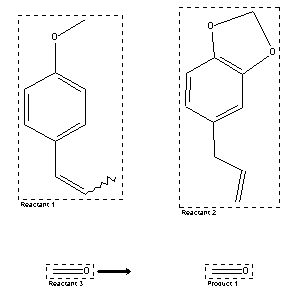

|  |
| FA | RX(1); FLST(1); RX(1) |
Reaction (1 of 1)
| Reaction ID | 132167 |
| Reactant BRN | 774229; 136380; 1209228 |
| Reactant | 1-methoxy-4-propenyl-benzene; 5-allyl-benzo[1,3]dioxole; formaldehyde |
| Product BRN | 1209228 |
| Product | formaldehyde |
| No. of Reaction Details | 1 |
Reaction Details (1 of 1)
| Reaction Classification | Chemical behaviour |
| Comment | Handbook |
| Citation Pointer | 1311967; Journal; Prisn; CHZEA6; Chem.Zentralbl.; GE; 91; I; 1920; 424;504585; Journal; Prins; CHZEA6; Chem.Zentralbl.; GE; 90; III; 1919; 1001;1311969; Journal; Prins; CHZEA6; Chem.Zentralbl.; GE; 89; I; 1918; 168; |
Reference (1 of 3)
| Citation Number | 504585 |
| Document Type | Journal |
| Authors | Prins |
| CODEN | CHZEA6 |
| Journal Title | Chem.Zentralbl. |
| Language Code | GE |
| (Series) Volume | 90 |
| Number | III |
| Publication Year | 1919 |
| Page | 1001 |
Reference (2 of 3)
| Citation Number | 1311967 |
| Document Type | Journal |
| Authors | Prisn |
| CODEN | CHZEA6 |
| Journal Title | Chem.Zentralbl. |
| Language Code | GE |
| (Series) Volume | 91 |
| Number | I |
| Publication Year | 1920 |
| Page | 424 |
Reference (3 of 3)
| Citation Number | 1311969 |
| Document Type | Journal |
| Authors | Prins |
| CODEN | CHZEA6 |
| Journal Title | Chem.Zentralbl. |
| Language Code | GE |
| (Series) Volume | 89 |
| Number | I |
| Publication Year | 1918 |
| Page | 168 |